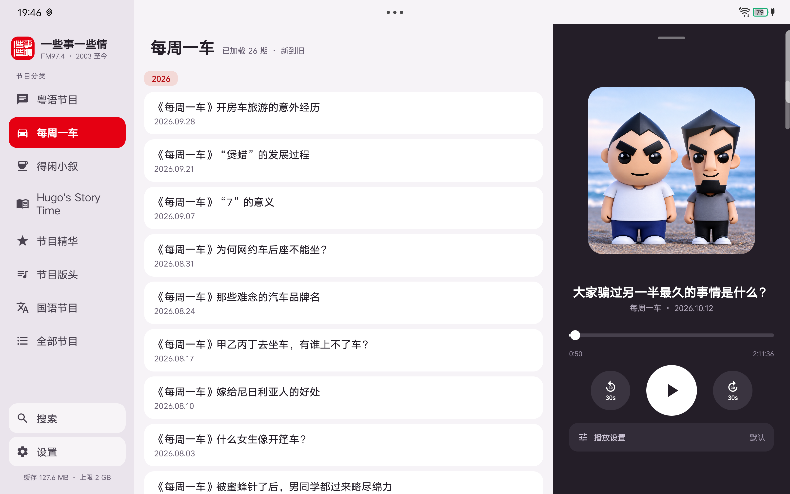
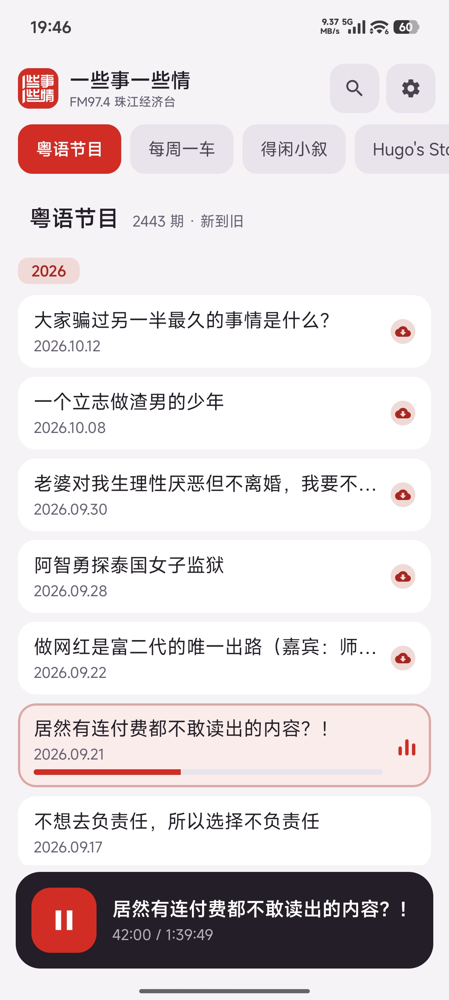
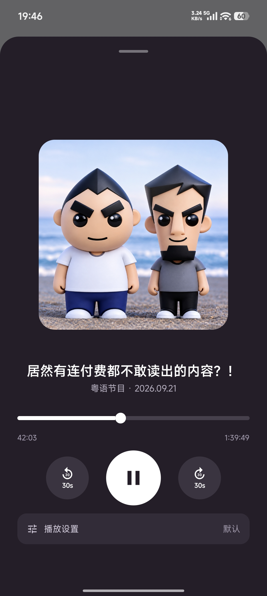
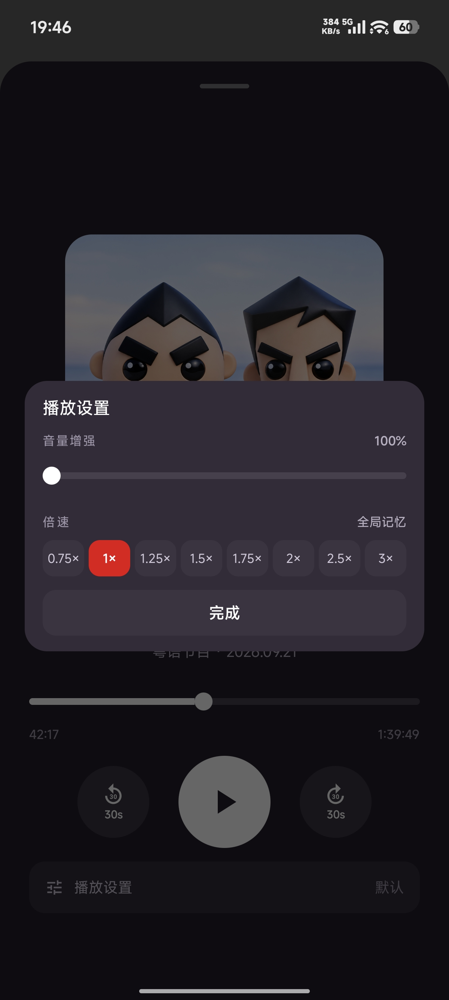

只保留「听节目」这一件事的第三方客户端。2003 年至今全部节目，一个不落。
专为 BYD DiLink 4.0 车机设计，手机、平板同样好用。无登录、无商城、无推送。

没有推荐算法、没有会员、没有开屏广告。打开就是节目列表。
节目按日期归档，可以按年份一键跳转。想听哪年就跳哪年，不用一直往下翻。
2300+ 期节目，输入标题或日期即时匹配。首次启动后台自动建索引，之后增量刷新通常只需 1 次请求。
每 5 秒自动保存一次，换集、杀进程、断电都不丢。首页一张「继续收听」卡片，一点接着播。
设置里打开后，上车点火、打开应用就接着上次那期继续播。默认关闭，不想要一上车就出声就别开。
全局记忆，下次还是这个速度。听访谈用 1.25×，听段子还是原速。
听过的片段自动存在本机（上限 2 GB，满了自动淘汰最旧的）。重听、回退 30 秒不再耗流量。
切到导航、锁屏、接电话都不中断。通知栏能暂停、拖动进度，导航播报时自动让路。
车机建议打开「隐藏顶部状态栏」，内容顶到上沿，播放键一步触达。
BYD DiLink 4.0（Android 10）实测，也向下兼容到 Android 7。
暖灰画布、品牌红、固定深色播放面板，不跟随系统深色模式——保证车机上观感一致。



APK 直接安装。车机需先允许「安装未知来源应用」。
下载量、版本记录都在 Releases 页。 如果 GitHub 直连很慢，页面上会给出第三方镜像；镜像不保证长期可用，请以 Release 页的包为准。
本应用是非官方第三方客户端，与 LoveQ 官网及《一些事一些情》节目方无任何隶属关系。节目内容版权归原作者所有。
本应用不存储、不分发任何音频，仅代为访问官网公开链接；非商业用途、不售卖、不投放广告。如权利人认为不妥，可在项目仓库提 Issue 联系，我将立即停止分发并下架。